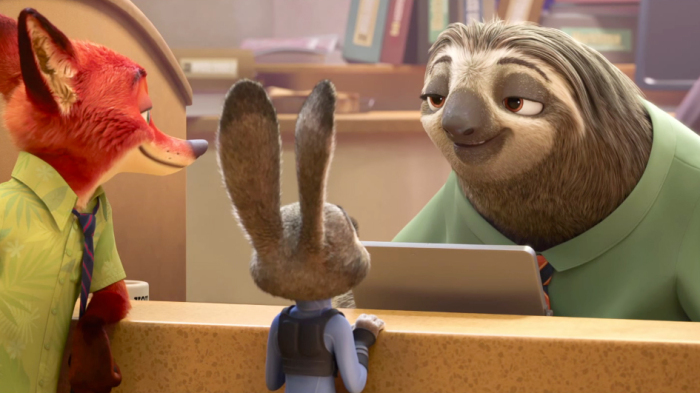
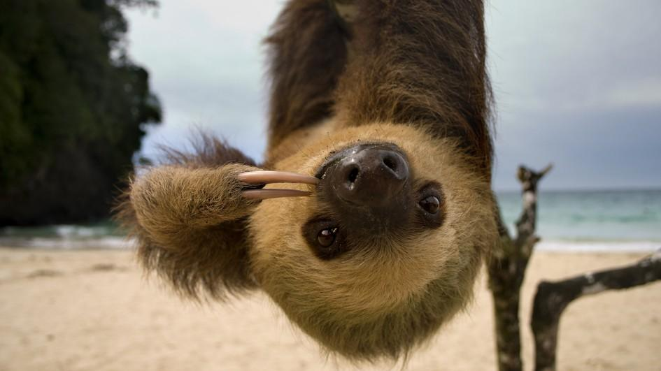
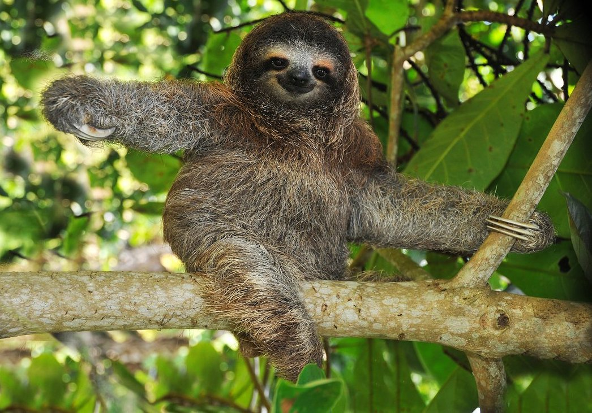

You know that they're slow and lazy. But did you know that sloths...
- are 3x faster in water than on land?
- only sleep about 10 hours a day?
- bask in the sun to raise their temperatures because they cannot shiver?
- are nocturnal?
- can live up to 40 years old?


The sloth's slowness is actually an evolutionary adaptation!
Their predators (especially the harpy eagle) can perceive very tiny movements, so the slow movements of a sloth
help it blend in with their surroundings!